Global Climate Change
GEOS 3410
Graham H. Edwards
Disclaimer
Class sessions are recorded and will be available on Canvas to support your learning.

Week 1 Schedule
Tuesday 8/27
- Syllabus key points
- IPCC reading, discussion
- Course overview
- Climate intro
Thursday 8/29
- Syllabus questions
- Syllabus Review
- Climate, cont...
Outisde of class
Syllabus
Please read the syllabus. If not for your own success in this course, then for Syllabus Trivia on Thursday.
If you never read the syllabus... (but please do!)
- Attend class (unless you should not or cannot)
- Drop-in hours – see me before you need me!
- Course schedule: midterm, climate zine, term paper
- Please reach out if you are struggling.
A little about me...
- Please call me "Graham"
- My pronouns are he/him
- I am a geochemist and cosmochemist
- I study rocks that form from glacial waters
- I also study rocks weathered by and near glaciers
- I also study rocks from asteroids (meteorites)
- I am building a wet chemistry and computation lab here!
- I like baking bread, biking, and long train rides
- I do not like driving
- I have a secret Wisconsin accent
(don't ask me to use it but you may hear it)
Diving right in...
Intergovernmental Panel on Climate Change (IPCC)

Step 1: Collaborators
Your tablemate is your collaborator.
Introduce yourself and share these 4 pieces of information:
- Name, pronouns
- Year or major or both.
- Hometown (however you define it)
- Bird or frog?

Report back
🐸 vs. 🐦
Step 2: Reading Assessment Report 6 (AR6)
Synthesis Report: Summary for Policymakers
-
Read through the excerpt on your table and discuss the following questions with your collaborator:
- What did you read that you already knew?
- What did you read that surprised you?
- What new question(s) do you have after this reading?
- How did reading this make you feel?
Be prepared to share your reflections
Report back
Course Overview
3 broad themes
- The Earth (climate) system:
physics & foundations - Earth climate history
- Modern climate change:
what might happen & what we might do.

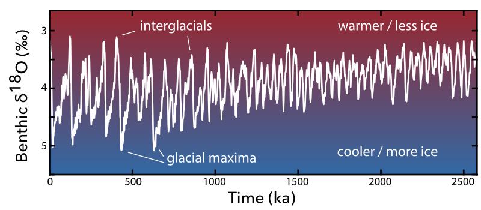

Theme 1
The Earth (climate) system: physics & foundations
Week 1
What is climate (science) & why do we care?
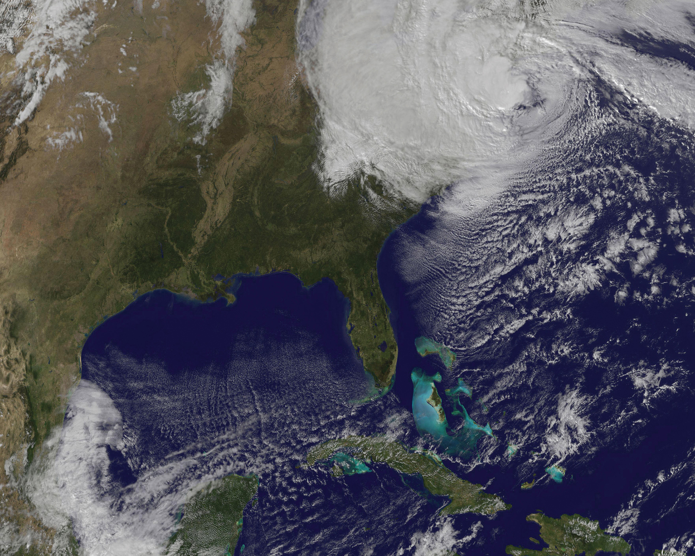Week 2
The Earth (climate) system
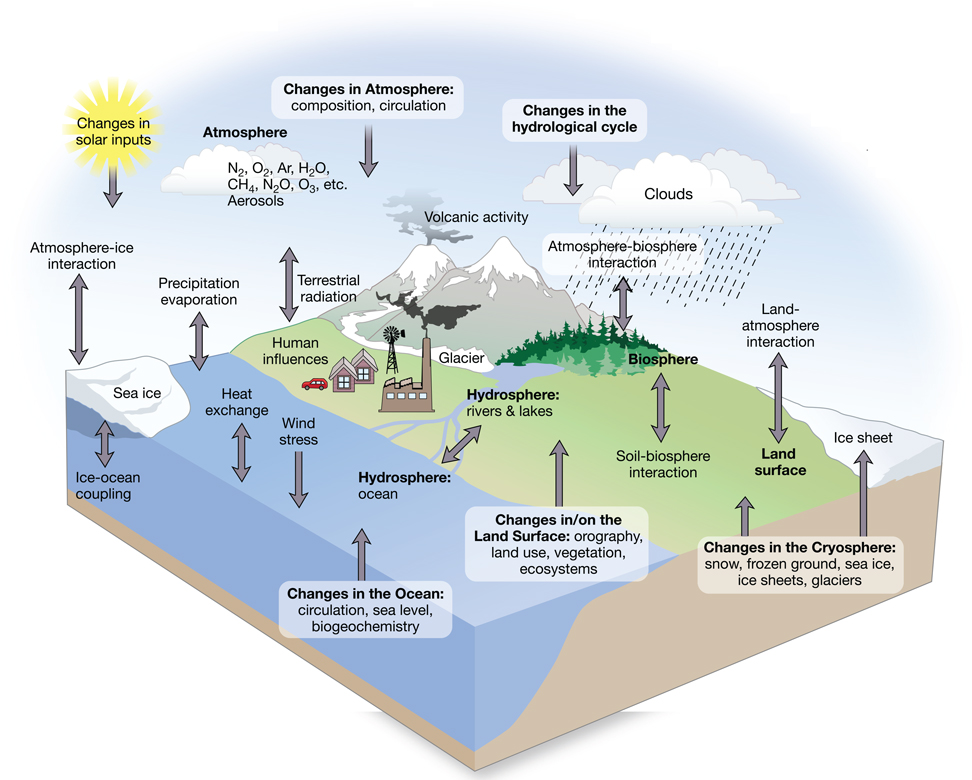Week 3
(Astro)Physics of climate

Week 4
Energy budget & radiative forcing
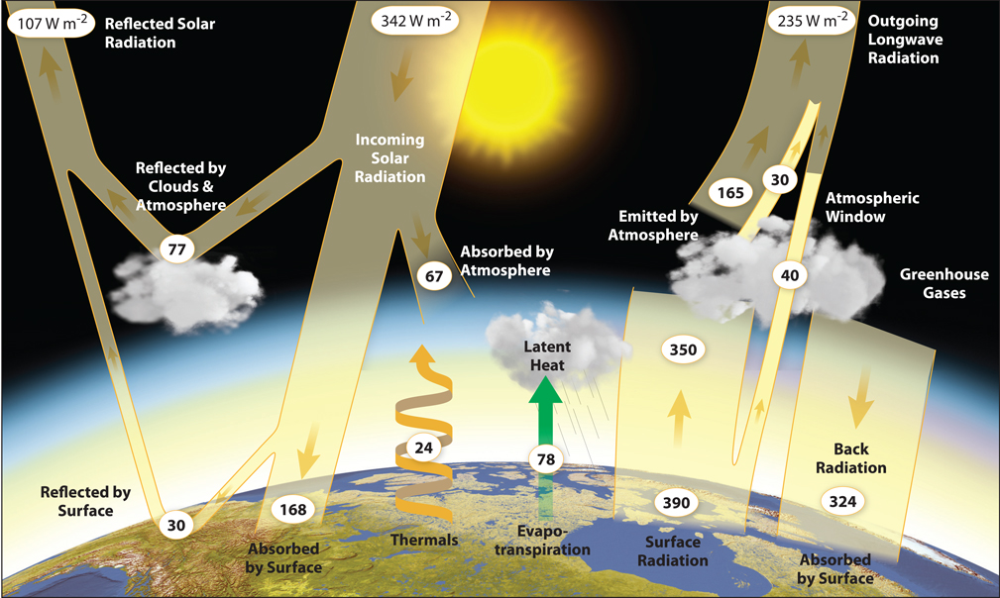Week 5
Ocean and atmospheric circulation

Week 6
Climate, weather, & teleconnections

Week 7
Midterm exam on theme 1

Theme 2
Earth climate history
Week 8
Paleclimate – intro & tools

Week 9
The cryosphere

Week 10
Earth's climate in deep time

Week 11
The Quaternary

Week 12
Deglaciation, the Holocene, anthropogenic climate change

Theme 3
Understanding modern, future climate change
Week 12
Deglaciation, the Holocene, anthropogenic climate change

Week 13
Environmental responses:
past, present, future

Week 14
Break: No Class
Week 15
Looking forward:
what might happen & what we might do

Application & evaluation
Activities & reading assessments
- readings for discussion
- in-class exercises
- problem sets
- mini essays
- etc...
Midterm Evaluations
Midterm exam (Week 7)
Climate zine project (Week 10-15)
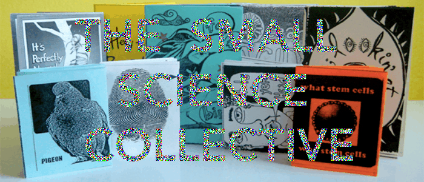Term paper & Final Presentation
An opportunity to zoom in on an aspect of anthropogenic climate change and explore mitigation/adaptation policies and strategies.- Proposal (Week 6)
- Outline (Week 10)
- Paper (Week 13)
3 steps for paper
Final presentation on your paper!
Breakdown in grading
| Total | 100% |
|---|---|
| Activities/assessments | 40% |
| Midterm exam | 15% |
| Zine project | 20% |
| Term paper assignments | 20% |
| Final presentation | 5% |
What is climate (science)?
Why do we care?
Climate & Weather
Let's establish some working definitions
Climate & Weather
Weather
The state of the atmosphere, mainly with respect to its effects upon life and human activities.
American Meteorological Society

Climate & Weather
Climate
Climate in a narrow sense is usually defined as the average weather, or more rigorously as the statistical description in terms of the mean and variability of relevant quantities over a period of time ranging from months to thousands or millions of years. The classical period for averaging these variables is 30 years, as defined by the World Meteorological Organization (WMO). The relevant quantities are most often surface variables such as temperature, precipitation and wind.
Climate and weather processes exist along a continuum.

Scales of climate
- Geographic (space)
- Temporal (time)
Geographic scales of climate
Geographic zones
Roughly correlate with mean annual temperature

Regional climate zones
Köppen-Geiger climate classification system

| A | Tropical |
| B | Dry |
| C | Moist Subtropical Mid-Latitude |
| D | Moist Continental Mid-Latitude |
| E | Polar |
| H | Highland |
Global distribution of Köppen zones

Temporal scales of climate
Annual mean temperature

{kind=link}
Decadal (10 yr) scale

Centennial (100 yr) scale

Millenial (1000 yr) scale
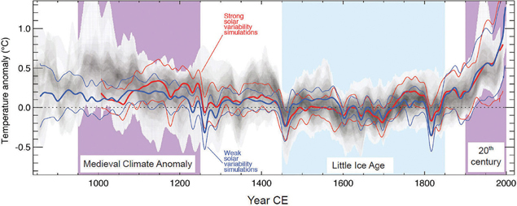104 yr scale

105 – 106 yr scale
107 yr scale

108 yr scale

109 yr scale

Climate across time and space
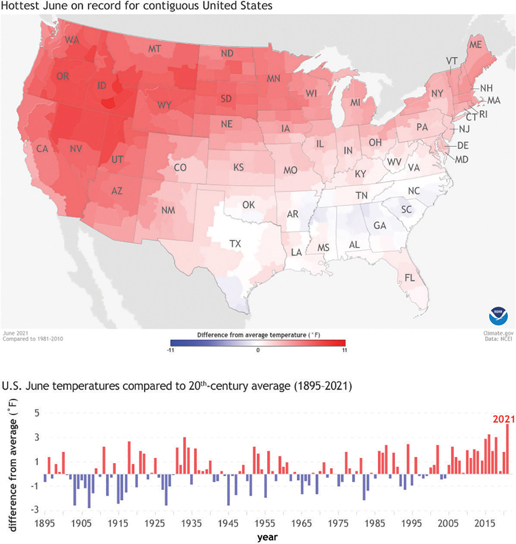Measuring Climate Change
Spatial variability
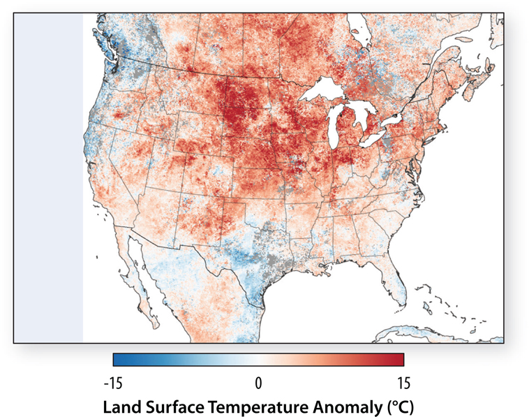Temporal variablity

Temporal Variability
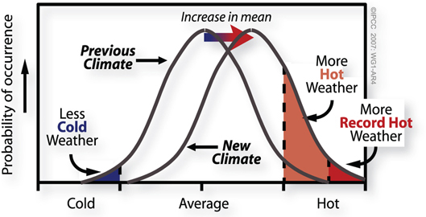Spatial & temporal variability
Evidence for modern climate warming
Context within Pleistocene
2580 ka to 11.7 ka, The "Ice Age"(s)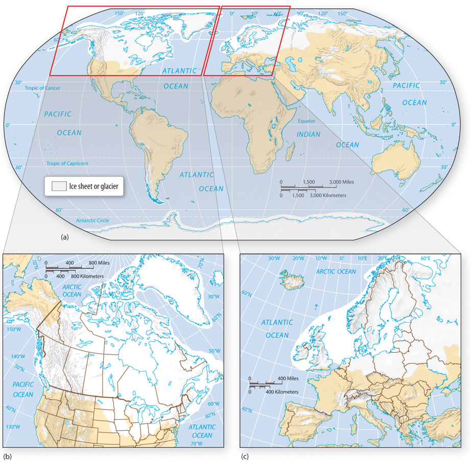
Context within Pleistocene
2580 ka to 11.7 ka, The "Ice Age"(s)Context within the Holocene
(11.7 ka to now)
Context within the last millenium
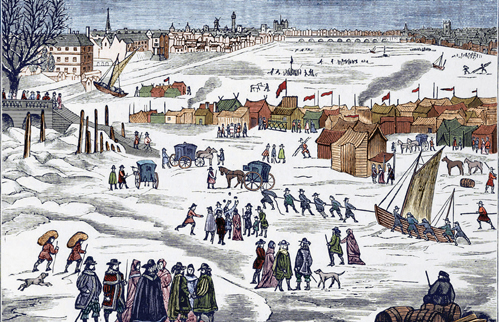
Mean global temperatures
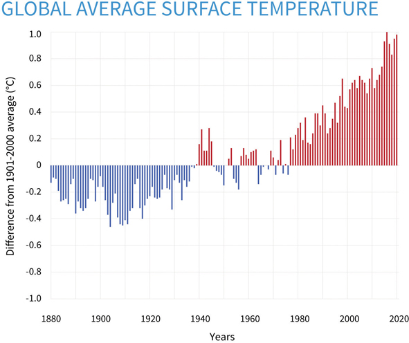
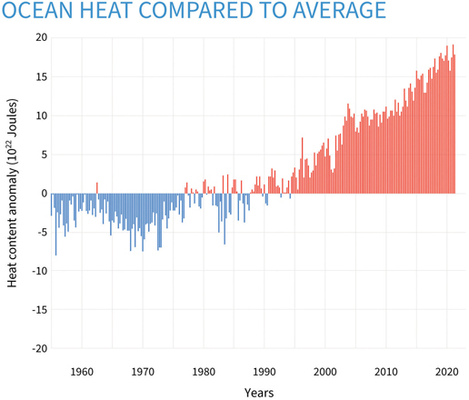
Distribution of Heating
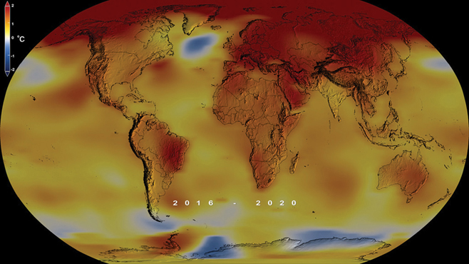
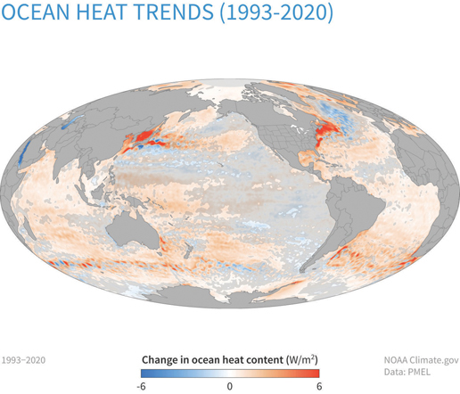
Flow of oceans and amtosphere (re)distributes heat

Climate change is heterogenous but consistent and requires anthropogenic forcing
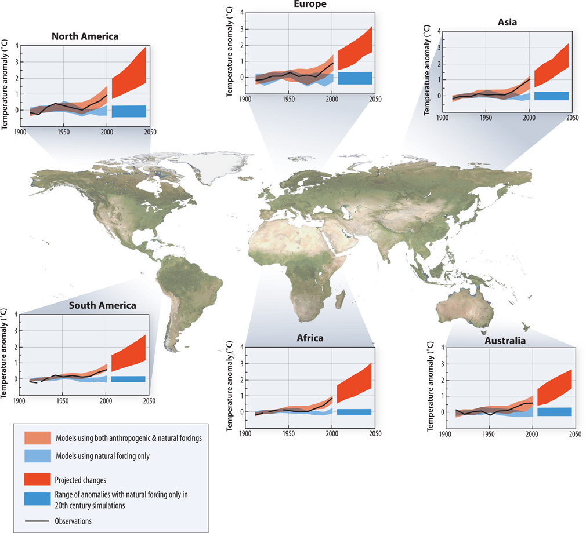Greenhouse Gases


*dry atmosphere, [H2O] ≤ 4%
Annual atmospheric CO2

🌲
"The Keeling curve" (instrumental)
Reconstruction of last 300 years


The role of greenhouse gases in Earth's energy budget
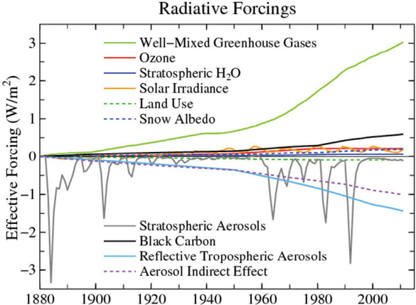The Holocene

Simulating the climate system
Climate model fundamentals
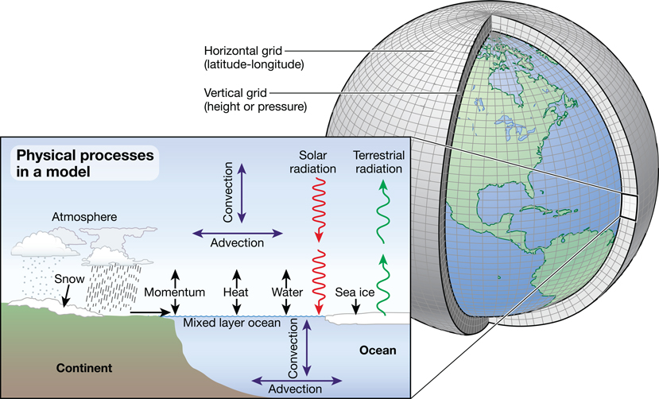Results from Community Climate System Model (CCSM) and the National Center for Atmospheric Research (NCAR)
Turning the knobs on forcings allow us to reconstruct (hindcast) cliamte of the past and predict (forecast) cliamte of the future
The hardest process to predict is human behavior

Next Week (2)
- Week 2 readings on Canvas
- Please complete Quiz 0 & sign-up for drop-in hours
- Tuesday: Components of the Earth system
- Thursday: Feedbacks and the modern climate system